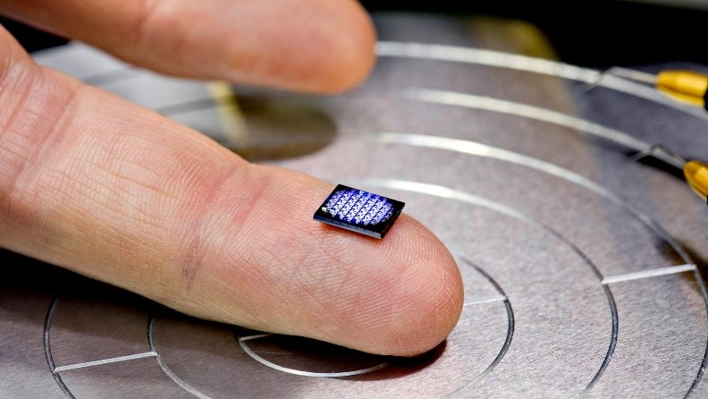

Современная цивилизация без компьютеров невозможна
-
Самый маленький процессор
Самый маленький процессор в мире был создан компанией IBM в 2018 году. Чип размером 1 × 1 миллиметр, содержащий несколько сот тысяч транзисторов, является полноценным процессором. Он способен принимать, сохранять и обрабатывать информацию с той же скоростью, что это делали выпускавшиеся в 1990-е годы процессоры х86. Этого, безусловно, недостаточно для современных компьютеров.
Однако такой мощности вполне хватает для решения большинства практических задач, не относящихся к “высокой” компьютерной инженерии или научных расчётов. Микропроцессор вполне может рассчитывать количество товаров на складах и решать логистические задачи. В серийное производство, правда, этот процессор пока не пошёл – для современных задач, даже при условии себестоимости в районе 10 центов, его миниатюрность избыточна.